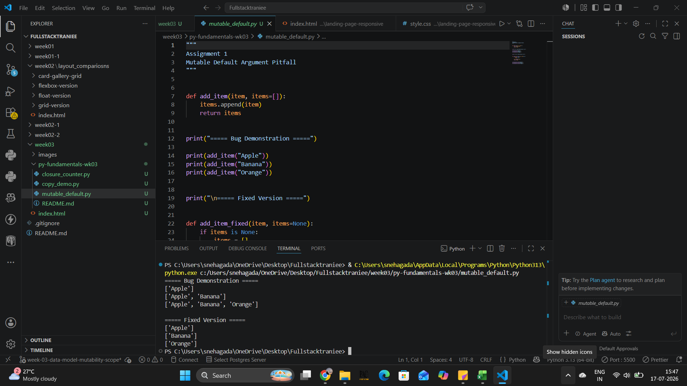
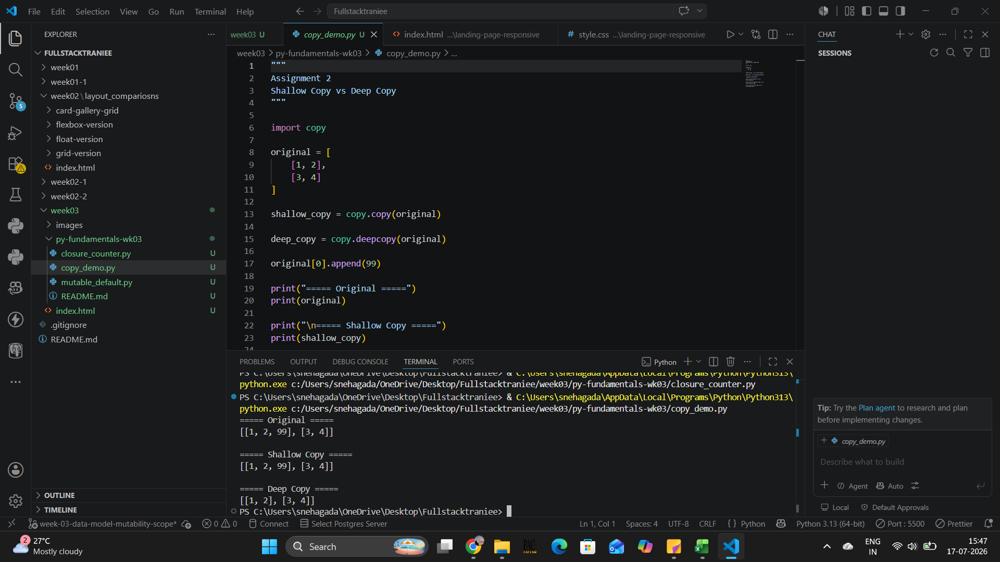
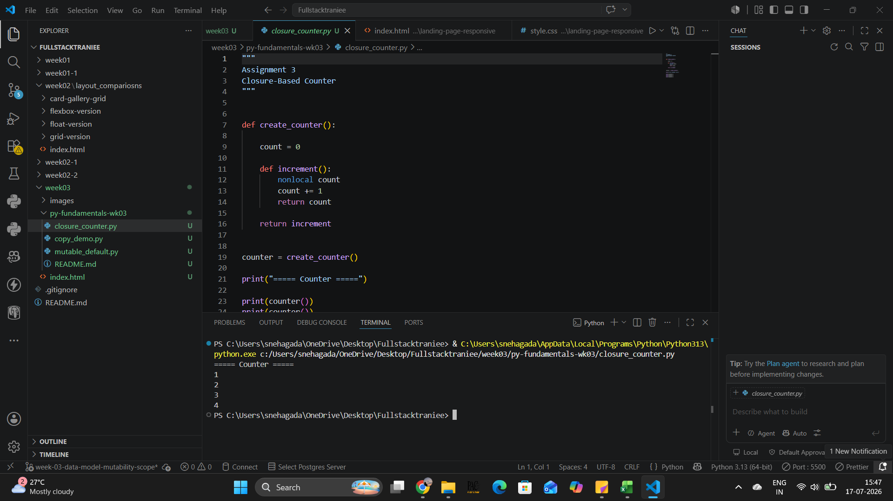

Demonstrates the mutable default argument bug and the corrected implementation using None.

Demonstrates the difference between shallow copy and deep copy using copy.deepcopy().

Demonstrates a closure-based counter using nested functions without using classes.

py-fundamentals-wk03/ │ ├── mutable_default.py ├── copy_demo.py ├── closure_counter.py └── README.md
This project demonstrates Python core concepts including mutable default arguments, shallow vs deep copy, and closures as part of the Python Fundamentals assignment.